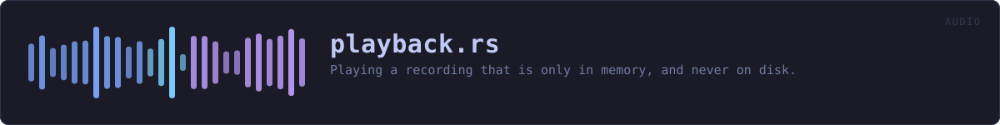

crates/veilvoice-audio/src/playback.rs
veilvoice-audio · 212 lines · read the source here · or on GitHub
Playing a recording that is only in memory, and never on disk.
What this is for
A take in the studio vault is sealed. Hearing it back means decrypting it, and the obvious way to hear a WAV is to write it somewhere and hand the path to something that plays files. That would put an unencrypted recording on the disk, which is the one thing the vault exists to prevent, and it would leave it there until somebody remembered to shred it.
So this takes the samples as they already are, in page-locked memory, and plays them from there. Nothing is written. When playback stops the buffer is dropped and Secret(veilvoice_crypto::Secret) wipes itself.
The samples are held, not streamed from the vault
Be plain about the shape rather than implying a stronger one. The whole take is decrypted into locked memory before a note is heard, because the container is sealed and authenticated as one piece: there is no way to open the first second of it without opening all of it, and an AEAD that let you would not be authenticating anything.
What that buys is still the thing that matters: no plaintext file, at any point. What it does not buy is a smaller footprint than the recording, and an hour of audio is an hour of audio in RAM. A format sealed in blocks would change that and is not what the vault writes today.
In plain words
Plays a recording straight out of protected memory, so listening to one never leaves a copy on the disk for somebody to find later.
WHAT THIS FILE CONTAINS
212 lines defining 5 functions (5 public), 2 types and 0 constants. Everything below is read out of the source, so it cannot disagree with the code.
The types it owns.
struct Sharedline 42 · What both sides can see while a take is playing.struct Playingline 57 · A take being played, for as long as this is held.
What happens when it runs. These are the ways in: public, and nothing else in this file calls them, so they are what an outside caller reaches first.
Playing::positionline 67 · How far in, in seconds.Playing::durationline 75 · How long the take is, in seconds.Playing::finishedline 83 · Whether it has reached the end.Playing::peakline 88 · The loudest sample since this was last called, and it resets.startline 107 · Start playing samples at rate on the default output device.
WHAT CALLS WHAT
The functions this file defines, and the calls between them. An edge means the callee's name appears, called, inside the caller's body. This is a syntactic reading, not a type-resolved one.
The same graph as Mermaid source
%%{init: {"theme":"base","themeVariables":{"background":"#1a1b26","primaryColor":"#1f2335","primaryTextColor":"#c0caf5","primaryBorderColor":"#7aa2f7","secondaryColor":"#16161e","tertiaryColor":"#16161e","lineColor":"#737aa2","textColor":"#c0caf5","mainBkg":"#1f2335","nodeBorder":"#7aa2f7","clusterBkg":"#16161e","clusterBorder":"#2f3549","fontFamily":"ui-monospace, SFMono-Regular, Consolas, monospace","fontSize":"14px"}}}%%
flowchart TD
n_position(["Playing::position<br/>line 67"])
n_duration(["Playing::duration<br/>line 75"])
n_finished(["Playing::finished<br/>line 83"])
n_peak(["Playing::peak<br/>line 88"])
n_start(["start<br/>line 107"])
click n_position href "https://github.com/tilas01/veilvoice/blob/main/crates/veilvoice-audio/src/playback.rs#L67" "open the source"
click n_duration href "https://github.com/tilas01/veilvoice/blob/main/crates/veilvoice-audio/src/playback.rs#L75" "open the source"
click n_finished href "https://github.com/tilas01/veilvoice/blob/main/crates/veilvoice-audio/src/playback.rs#L83" "open the source"
click n_peak href "https://github.com/tilas01/veilvoice/blob/main/crates/veilvoice-audio/src/playback.rs#L88" "open the source"
click n_start href "https://github.com/tilas01/veilvoice/blob/main/crates/veilvoice-audio/src/playback.rs#L107" "open the source"
classDef entry fill:#1f2335,stroke:#7aa2f7,color:#c0caf5
class n_position,n_duration,n_finished,n_peak,n_start entryThis site loads no third-party script, so it cannot run Mermaid; the diagram above is the same nodes and edges drawn by the generator instead. GitHub renders the source below directly.
ITEMS
| Item | Line | Documentation |
|---|---|---|
Shared struct | 42 | What both sides can see while a take is playing. |
Playing pub struct | 57 | A take being played, for as long as this is held. |
Playing::position pub fn | 67 | How far in, in seconds. |
Playing::duration pub fn | 75 | How long the take is, in seconds. |
Playing::finished pub fn | 83 | Whether it has reached the end. |
Playing::peak pub fn | 88 | The loudest sample since this was last called, and it resets. |
start pub fn | 107 | Start playing samples at rate on the default output device. |